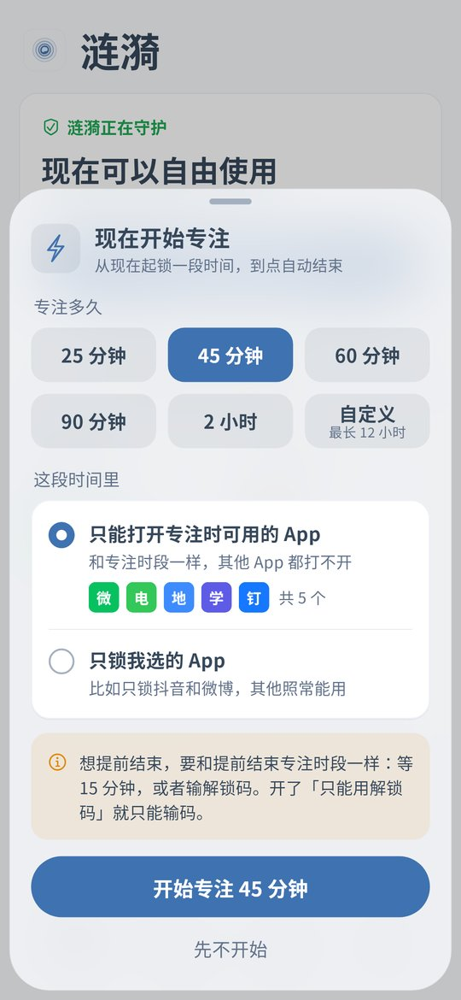

Drifting to Videos During Online Classes
A lot of learning now happens on a phone. Adults take evening courses for certificates, software skills or a language, leave the lesson playing, and a few minutes later they are on TikTok or Instagram. Kids join online classes, watch recorded lessons and hand in homework on a phone. From across the room it looks like studying, while the other half of the split screen is playing short videos. Ripple can close the distracting apps during class time and leave the class app working. The first part below is for adult learners, and the second part is for parents. Both Android and iPhone are covered.
Quick focus on Android v0.1.8



Screens show the Chinese interface.
Adults staying with an online course
One tap before the lesson
On Android v0.1.8 tap Start focus now on the home screen, pick 45, 60 or 90 minutes, and choose to lock only the apps you pick, such as TikTok, Instagram, YouTube and games. The course app is not on the list and keeps playing. Focus ends on its own.
Split screen does not help
Some people put the lesson on the top half and short videos on the bottom. Android v0.1.8 covers the locked side with the block screen and also blocks picture-in-picture and floating windows.
Regular live classes as a schedule
If the class is on fixed evenings, set a focus schedule on Android or iPhone, for example Tuesday and Thursday 19:30 to 21:30. It starts on time without a tap.
Not a whole evening of scrolling afterwards
On Android give short videos a daily time limit, or a daily open limit with a pause before each open. Watch a bit after class and stop when it runs out.
Ending early needs a wait
Ending a quick focus early needs the cooldown, 15 minutes by default, or the unlock code. Timing uses device uptime, so changing the clock does not end it. On Android you can also turn on strict mode and give the code to family.
iPhone: block during class times
The iPhone version is v0.1.5 and has no quick focus or split screen blocking yet. Set a blocking schedule that matches your classes. On iOS 16 and later the system blocks the apps in the background, and someone else can hold the unlock code.
Parents with a child in online classes
Only class and study apps during the lesson
On Android start a 60 minute quick focus before class. By default only the apps in the focus allowed list can open, so put the class app and study apps there and everything else stays closed.
Split screen, small windows and PiP are blocked
If the child shrinks a video into picture-in-picture or opens it as a floating window over the lesson, Android v0.1.8 blocks it and counts time in those windows toward today's usage.
Daily class time as a schedule
For classes at fixed hours, such as 8:00 to 11:30, set a focus schedule on Android or iPhone. It starts on time even when you are at work.
Breaks without endless games
On Android give a game 3 opens a day or 40 minutes a day. Opening it during a break comes with a short pause, and when the opens are used it stays closed.
The child cannot get around it
The parent keeps the unlock code and can turn on uninstall protection. On Android timing uses device uptime, so changing the clock does nothing. See the clock change page. On iPhone the block on deleting apps stops long press removal. See the iPhone page.
Calls and chats stay open
Leave the phone app and chat apps off the list so the child can reach you and the teacher. On Android you can close only WeChat Moments and Channels while class group chats keep working.
Setup steps
Install Ripple
On Android install the latest APK and turn on the accessibility service. On iPhone you need iOS 16 or later and Screen Time permission.
Sort the apps
Class, recorded lesson, homework and dictionary apps are needed for class. Short video, game, drama and shopping apps are the distractions.
Android: quick focus before class
For your own course choose to lock only the apps you pick. For a child use the default allowed list. Fixed timetables can be a schedule instead.
iPhone: a schedule for class times
Put the distracting apps into a focus schedule that matches the timetable.
Set the unlock code and uninstall protection
For your own phone give the code to family. On a child's phone keep it yourself. Turn on Anti-Uninstall on Android and the block on deleting apps on iPhone.
FAQ
Will focus also close the class app?
No. When you lock only the apps you pick, only those close. With the default allowed list, add the class app to the list and it opens.
Can it stop a child watching videos in split screen during class?
Yes, from Android v0.1.8. A blocked app in split screen, a floating window or picture-in-picture is blocked too.
Does the iPhone version have quick focus or split screen blocking?
Not yet. The iPhone version v0.1.5 has schedules, the block on deleting apps, clock change protection and the unlock code.
Class ended early. How do I end focus?
Wait through the cooldown, 15 minutes by default, or enter the unlock code.
Does it cost money or need an account?
It is free with no ads and no account. Settings stay on the phone.